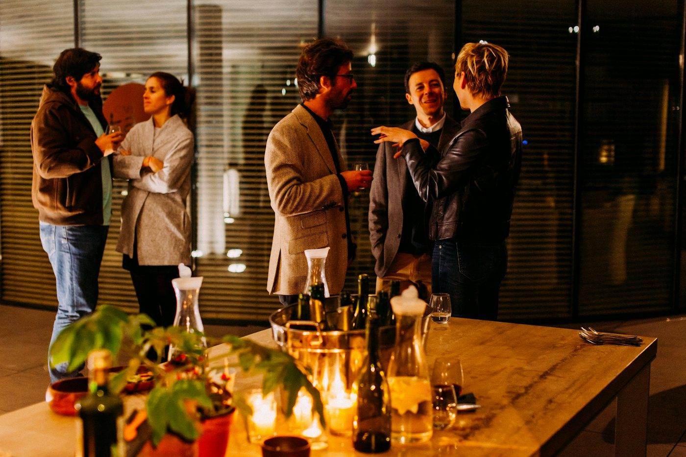

Warm-up · Yes or no?
Say it now. One idea is enough. Any words are OK.
Someone invites you. You don't really want to go. What do you do?
I say yes to almost every invitation. It's polite.
I say no, with no guilt, when I don't want to go.
Teacher notes · §1 Warm-up
Pedagógica
- Lee el Hook con curiosidad real y espera. Acepta cualquier respuesta: una palabra, un gesto, español mezclado. No corrijas.
- Votación del Desacuerdo (aceptar casi todo por compromiso vs. decir que no sin culpa): grupo vota con la mano o en el chat; en 1:1 el alumno elige y tú defiendes el otro lado con una frase sencilla.
- Máximo 4 minutos.
Engagement
- Dramatiza la cuerda: “Pull! Who's winning?”.
- Pregunta quién recibió una invitación esta semana: esa invitación real regresa en la Misión.
Crecimiento
- Anota cómo invitaría HOY el alumno (probablemente “Do you want…?” o “You come?”). Al final lo compara con “Would you like to…?”.
- Puente: “In 50 minutes you're going to invite two real people to a real plan.”
Vocabulary · 5 plans, 5 answers
Tap to flip · 🔊 to listen
0 / 10 flippedMatch the two halves · say it out loud
0 / 6 pairsTap the start, then the end. Say the full sentence out loud before you tap.
Mystery Zoom · guess the plan with an invitation
Each photo is a plan. The teacher zooms out one step at a time. Guess with a full invitation — “Would you like to ___?” — never one word. The other team answers with a chunk: “That sounds good!” or “Sorry, I can't…”
Teacher notes · §2 Vocabulary
Pedagógica
- Voltea cada tarjeta: tú la dices, el alumno repite 2 veces y la usa en una invitación propia. Las 5 respuestas (That sounds good! / fun! / Sorry, I can't. / Maybe next time. / I'd love to!) se enseñan como bloques fijos, sin analizar gramática.
- Match: el alumno dice la oración COMPLETA en voz alta antes de hacer clic.
- Mystery Zoom (VOC-14, OCULTAMIENTO): tú controlas “Zoom out”. Solo cuenta la adivinanza dicha como invitación completa (“Would you like to grab a coffee?”) = +2; si el otro equipo responde con un chunk natural = +1 para ellos. Los puntos son por producir lengua, no por adivinar rápido. Grupo: Team A / Team B; 1:1: el alumno invita y tú respondes, luego al revés.
Engagement
- Haz suspenso en cada zoom: “Step two… what is it?”.
- Cierra en voz alta: “Team __ wins with __ points!”
Crecimiento
- Las 5 actividades de hoy (walk, coffee, park, movie, dinner) se reciclan en la escalera de §3, en las tarjetas secretas de §6 y en la Misión.
- Error a cazar desde ya: “Would you like go…?” sin to.
Grammar · Invite · Accept · Say no
Read the chat. How does Megan invite? How does Jason answer?

Would you like to watch a movie together on Friday?
That sounds fun! What time?
Seven? And would you like to have dinner first?
Sorry, I can't. I'm going to work late. Maybe next time!
Three chunks · learn them as complete phrases
1 · Invite
Would you like to go for a walk?
2 · Say yes
That sounds fun! · I'd love to!
3 · Say no, nicely
I'm going to visit my family. Maybe next time.
| chunk | example | |
|---|---|---|
| ? | Would you like to + verb … ? | Would you like to go for a walk on Saturday? |
| + | That sounds good! / fun! · I'd love to! | That sounds good! What time? |
| − | Sorry, I can't. + I'm going to … · Maybe next time. | Sorry, I can't. I'm going to visit my family. |
| ⇄ | Compare two plans · coming in S28 | The park is cheaper than the movies. |
“Would you like to…?” is one polite block. Learn it complete — you don't need more grammar for it today.
“Would you like to…?” es un bloque fijo y cortés para invitar; no se explica el sistema de would (eso es de niveles más avanzados).
“That sounds good / fun” y “Sorry, I can't” también se aprenden como frases completas.
Cómo se usa: Would you like to + verbo base (go, have, watch, grab). Para decir que no, agrega una razón con going to: Sorry, I can't. I'm going to visit my family.
Say it right · linking and stress
Fast speakers link “Would you” — it sounds like wuh-juh. You only need to recognize it. Stress the last word: sounds GOOD, sounds FUN.
Choose the correct form
Build-Up Sentence · climb the invitation ladder
Choose one chip for the next step. Say the WHOLE invitation out loud from the start. Correct? Climb one step. A mistake? The ladder breaks — start again. Your best ladder counts.
Mistakes Spanish speakers make
Teacher notes · §3 Grammar
Pedagógica
- Sesión de chunks: chat → 3 bloques → tabla. Máximo 5 minutos de explicación. Pregunta: “¿Cómo invita Megan? ¿Cómo dice que sí Jason? ¿Cómo dice que no?”.
- Level boundary: would solo como bloque fijo de invitación; sin condicionales, sin “I would…” libre. El rechazo recicla going to (S25–S26).
- Práctica A es mecánica (máx. 1/3 del bloque).
- Build-Up Sentence (GRM-17, ESCALADA, etapa significativa): peldaños actividad → + día → + con quién → + respuesta completa de la otra persona. El equipo dice TODA la oración desde el inicio en cada peldaño; tú decides “climb” o “breaks”. Grupo: Team A y Team B alternan; 1:1: el alumno sube, tú haces de la otra persona en el peldaño 4.
Engagement
- “Who has the tallest ladder?” Anuncia la altura récord en cada turno.
- Cierre en voz alta con la mejor escalera completa.
Crecimiento
- Pronunciación: “Would you” enlazado /wʊdʒə/ solo como reconocimiento; exige stress en “sounds GOOD / FUN”.
- La mejor escalera es el modelo para la Misión.
Reading · A neighborhood invitation
Saturday Walk & Coffee
Plans, answers and reasons
Teacher notes · §4 Reading
Pedagógica
- Texto original (62 palabras) con formato de invitación de app vecinal. Primera lectura en silencio, 1 minuto: solo ¿qué plan es y quién dice que sí? Segunda lectura en voz alta: un alumno por mensaje.
- Trampas: el café es DESPUÉS de caminar; Pedro dice que sí (no “Sorry, I can't”).
- Después de las preguntas, el alumno responde a Lucía con su propia respuesta (sí o no + razón con going to).
Engagement
- “¿Tu colonia tiene un grupo así? ¿Qué invitaciones llegan?”
Crecimiento
- Reto: el alumno escribe la invitación de SU colonia en una sola oración con Would you like to…?
Listening · Making weekend plans
Listen once. Does Jason say yes to Saturday?
One sentence is an impostor. Find it.
Listen again. Three sentences are true. One mixes the plan with a habit. Tap the impostor — first try counts. Then correct it with the exact fact.
The new plan
Megan invites YOU. Answer her.
Teacher notes · §5 Listening
Pedagógica
- Acentos: MEGAN — mujer, inglés canadiense, lento. JASON — hombre, inglés canadiense, lento. Guion palabra por palabra de la ficha; la pausa antes de “Actually” es natural (no se lee). Dos pases mínimo.
- Fase 1 sin texto. Fase 2 (LIS-18 Now or Habit?, IMPOSTOR): solo cuenta el primer clic; +1 por encontrar el impostor y +1 por corregirlo con el dato exacto. “Show the script” solo al final.
- Grupo: en parejas comparan antes del clic. 1:1: el alumno dice la corrección en voz alta (“No — he's going to visit his sister on Saturday”).
Engagement
- “Megan doesn't get angry. What does she say?” → “Maybe next time?” Es el modelo de rechazo amable.
Crecimiento
- “We could grab a coffee after” es solo reconocimiento; no se produce could.
- La Fase 3 es el ensayo del rechazo + alternativa de la Misión.
Speaking · The secret objective
Get a YES — but your partner has a secret card
Round 1 / 4Player A: read only card A — your goal is a YES. Player B: read only card B — it says if you can or can't. A invites with “Would you like to…?”. B answers with a chunk. Can't? Say why with going to — A can try a new day.
8 questions · always 2 follow-ups
The teacher asks. You answer with a real example and one more detail.
Teacher notes · §6 Speaking
Pedagógica
- B18-07 Role Play with a Secret Objective (ROL OCULTO), versión invitación: A debe lograr que B acepte una invitación específica; B tiene una tarjeta secreta que dice si puede o no. Reglas en 3 frases: “Read only your card. A invites. B answers — if you can't, say why.”
- En línea: comparte en pantalla solo la tarjeta A y manda la tarjeta B por chat privado (o pide que B se voltee). Puntaje: +1 invitación correcta (A), +1 respuesta natural con chunk (B), +1 si A consigue el sí (con día alterno si hace falta).
- Grupo: Team A y Team B alternan quién invita. 1:1: el alumno invita en las rondas 1 y 3; tú invitas en 2 y 4 y el alumno responde — solo cuentan los puntos del alumno.
- Entre rondas usa las 8 preguntas de la ficha (las haces TÚ): nunca aceptes respuesta de una palabra; pide siempre los 2 follow-ups.
Engagement
- Revela las tarjetas al final de cada ronda: “B couldn't go on Saturday — did A find a new day?”
Crecimiento
- Cuenta cuántas veces el alumno ofrece alternativa (“How about Sunday?”) sin ayuda: es la meta de S31.
Mission · Real Invitation Round

Invite two real people to a real plan.
Not a book plan — a plan you really want to do this week. Invite 2 different classmates with “Would you like to…?”. They answer for real: yes, or “Sorry, I can't” + a reason with going to.
Group: breakout rooms in pairs — change partner after 3 minutes. Everyone invites 2 people and answers 2 invitations.
1:1: invite the teacher two times, to two different real plans. The teacher answers like two different friends.
Success: 2 complete invitations with a natural answer that makes sense.
Teacher notes · §7 Mission
Pedagógica
- Real Invitation Round (ficha): cada alumno invita a 2 compañeros distintos a un plan REAL (no inventado) con Would you like to…?; cada compañero acepta o dice “Sorry, I can't” + razón con going to.
- Éxito: 2 invitaciones completas con respuesta natural y coherente. Evidencia: checklist del maestro — invitación + respuesta + (si rechaza) razón con going to. El boleto marca cada punto; tú confirmas.
- No interrumpas: el feedback va en §8.
Engagement
- Anuncia: “__ yeses today! Who has a real plan this week?”
Crecimiento
- “In Session 28 you're going to choose between two options: This one or that one?”
Wrap-up · Better the second time
✓ Success
↑ Upgrade
✎ Repair
↻ 2nd try
Invite the teacher again to your real plan. The teacher says no — answer with a new day. Same plan, better English.
60 seconds · 5 questions
My second try is better because…
You can invite someone to a simple plan and answer an invitation.
Homework: this week, invite a real person to a real plan in writing, with Would you like to…? Next: Session 28 · This One or That One?
Teacher notes · §8 Wrap-up
Pedagógica
- Máximo 2 aciertos y 3 correcciones de alto valor (prioridad: “like to” sin to, “Yes, I do” como respuesta a una invitación, rechazo sin razón). Luego segundo intento de la invitación contigo.
- Exit quiz: 60 s con el temporizador; el alumno dice la respuesta en voz alta antes de hacer clic. El tiempo no da puntos: solo marca el ritmo.
Engagement
- Compara con el minuto 1: “Minute 1: Do you want…? Minute 58: Would you like to…? — and a polite no.”
Crecimiento
- Registra en el portal: Mystery Zoom, mejor escalera, impostor del listening, puntos del rol secreto e invitaciones de la Misión.
- Tarea (Práctica de la ficha): invitar por escrito a una persona real a un plan real esta semana con Would you like to…? Los chunks regresan en S31 y S32.